Syndicate Ads
A Reusable Ad Template
For the summer of 2017, I interned at Yelp as a designer on the Business Money team and worked on lots of projects involving ads and paid products. I had a ton of fun working with different teams on challenging problems.
The Problem
Part of the Yelp for Business product is ads, and not all businesses’ ads are used optimally.
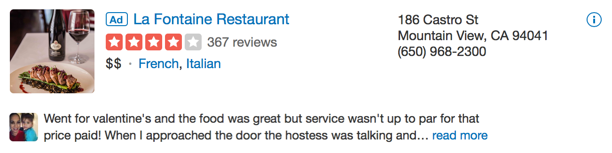 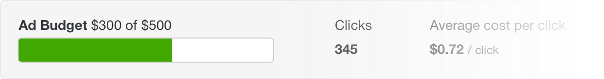For a business to use their ads optimally, they pay for as many clicks as their budget allows. However, what if a business ad is rarely clicked? We decided to solve this by giving businesses more ad exposure through syndication.
The Task
The design of the syndicate ads had to follow the following guidelines:
- although there will be multiple size variations of the same ad, there must be only one template that works for any business
- must be aesthetically pleasing and follow the Yelp style guide
- must work in the sizes: 728x90, 970x250, 300x600, 300x250
Iterations
There were countless iterations, but I chose a few key designs to display here that show the process.
My first few iterations were very visual.
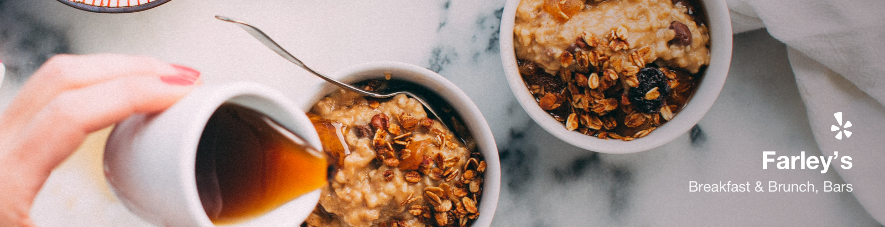 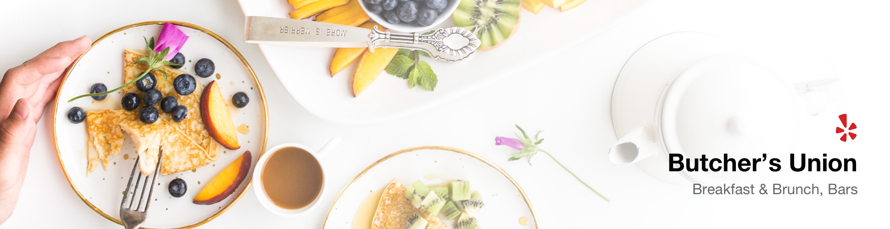 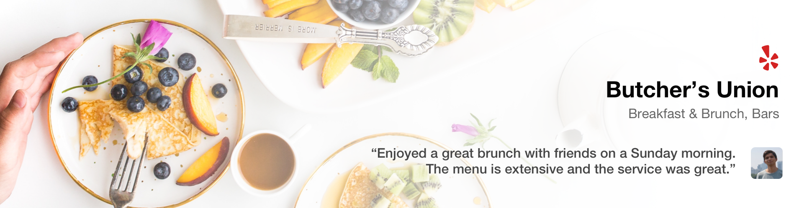Having spent too much time in a city with businesses that have beautiful content, I falsely assumed this was common for other cities. My research showed that many businesses didn’t have content that would fit this design, so I made several more iterations.
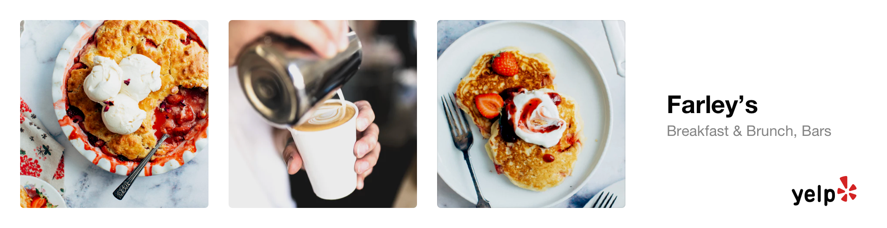 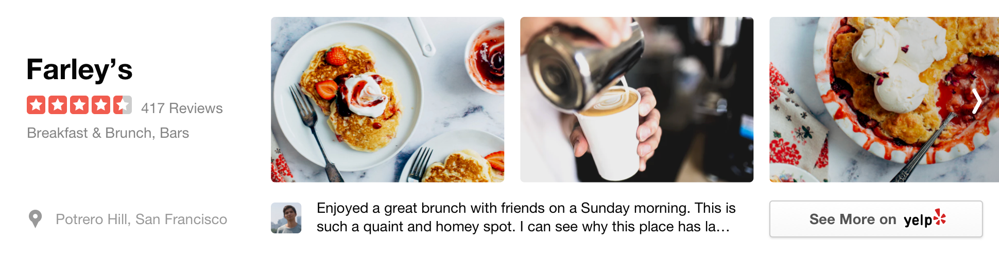 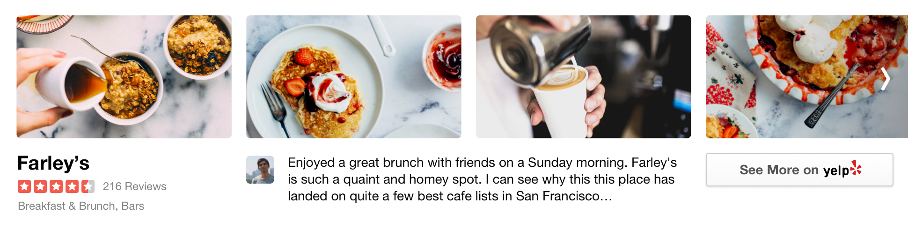
I de-emphasized the banner image, but placed a large importance on photos. In the users mind, images play a large part in the concept of a business. However, the first version of these ads needed to work with any business and there are lots of them with little to no images (e.g home services businesses).
Also, to get an idea of the number of iterations I explored, here are some screenshots of my Sketch files.
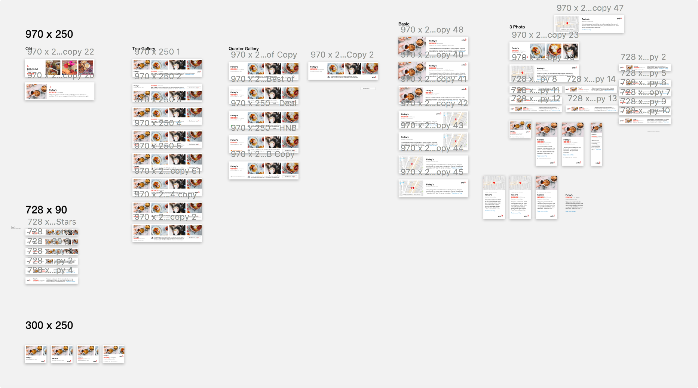 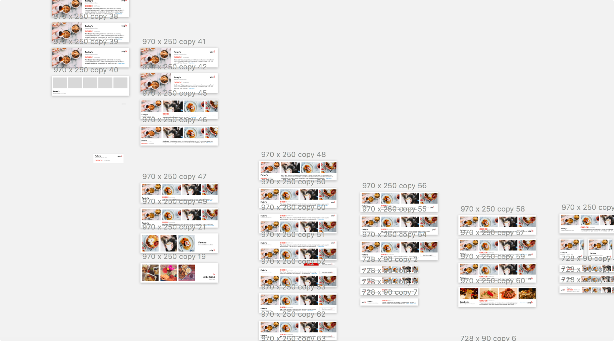The Final Designs
I decided to simplify the designs by having one visual focus, and one detail focus. This allows us to place a high quality image when there is one, and for businesses with no photos, or good quality reviews, we can replace the visual focus with a map, and the details focus with business details.

These designs also work when businesses have low content:
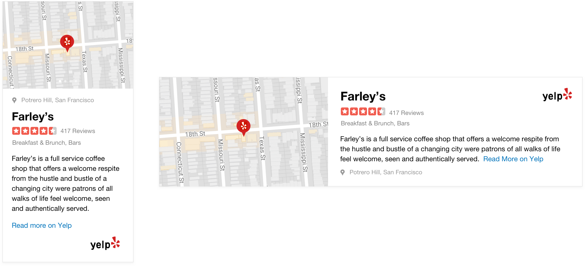{kind=link}
The designs also feel consistent with other Yelp components: